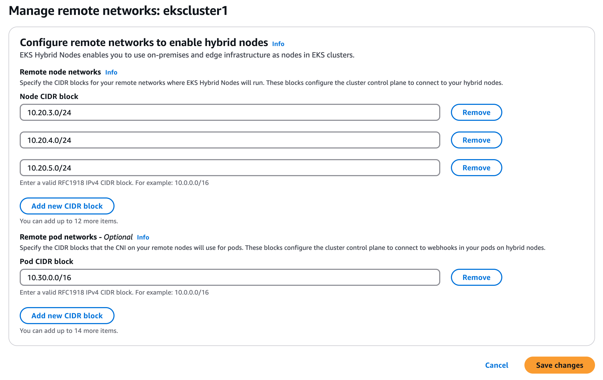
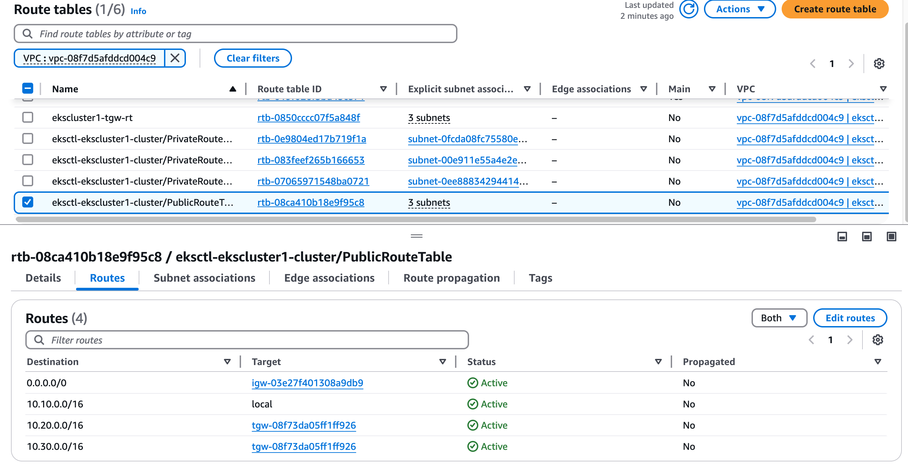
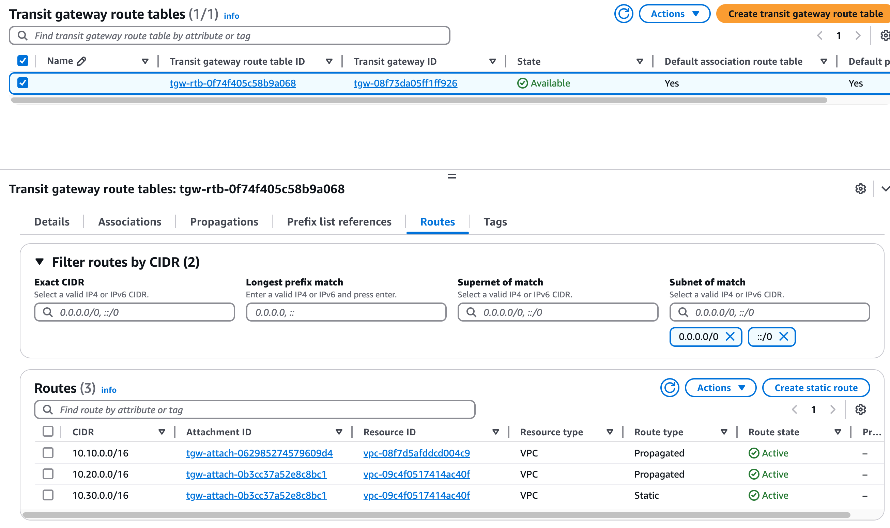
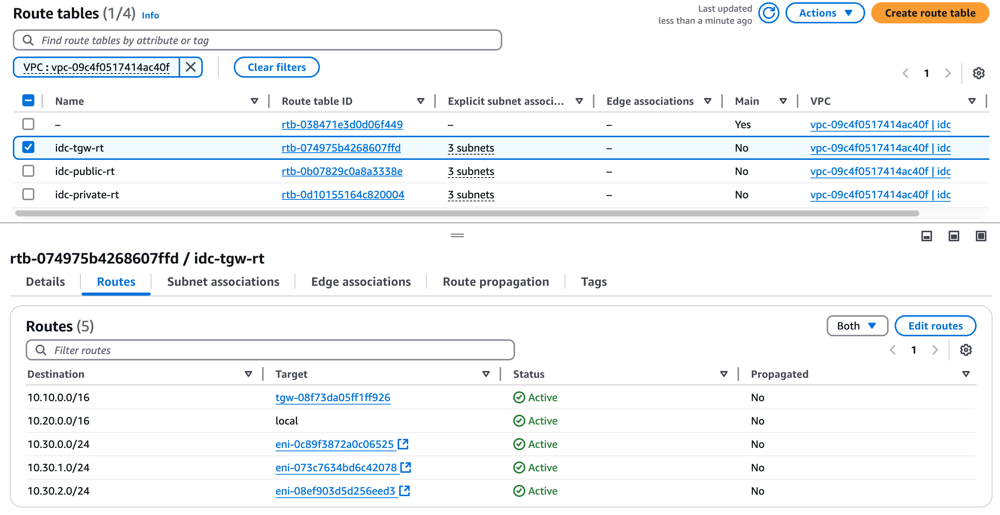

突破VPC地址限制：EKS混合节点架构实战指南¶
“在软件架构中，限制往往催生创新。”
引言：当VPC地址耗尽遇上容器化浪潮¶
想象一下这个场景：你正在为一个大型零售企业上线容器化解决方案。一切看起来都很完美，直到你发现一个棘手的问题 - VPC地址空间不足。这不是一个假设的情况，而是我们在香港区域实施EKS项目时真实遇到的挑战。
让我们从一个具体的案例开始：客户计划将其核心业务应用迁移到容器平台。这个应用需要部署在已经规划好的VPC中，但现有VPC的地址空间十分有限。如果采用标准的EKS配合AWS VPC CNI的部署方案，可用的IP地址将很快耗尽。
为什么这是一个棘手的问题？¶
你可能会想：”为什么不直接扩展VPC的地址空间呢？”确实，AWS VPC支持附加次要CIDR，这看起来是一个直观的解决方案。但现实情况往往比我们想象的更复杂：
-
技术限制：AWS对VPC CIDR的扩展有严格的限制。例如，根据AWS官方文档，当VPC的主要CIDR在10.0.0.0/8范围内时，只能附加100.64.0.0/10作为次要CIDR，无法附加其他网段，例如198.19.0.0/16作为次要CIDR。
-
企业网络规划：更关键的是，企业已经有严格的全球IP地址分配策略：
- 10.0.0.0/8网段：预留给AWS云环境和数据中心
- 100.64.0.0/10网段：专门用于店铺网络
这种精心设计的网络规划让可用的地址空间变得极其珍贵。
初次尝试：Overlay网络的陷阱¶
于是我们首先想到了使用overlay网络方案。这看起来是个不错的主意：使用Calico或Cilium这样的CNI插件来创建Overlay网络，这样就可以在有限的VPC地址空间上运行大量Pod。然而，实施过程中我们遇到了另一个挑战：Pod的overlay网络地址对EKS控制平面完全不可见。这导致了api-server和pod之间的网络通信问题。虽然我们可以通过在某些关键Pod（如准入控制器webhook）中设置hostNetwork: true来临时解决这个问题，但这种方案并不完美。
设计新方案：平衡多方需求¶
面对这些挑战，我们需要重新思考整个架构设计。新的解决方案必须同时满足多个关键需求：
-
企业内部访问能力：所有EKS VPC中的应用组件（包括数据库）必须支持企业内部访问，或者被企业内部其他应用访问
- 需要支持堡垒机访问数据库，进行数据库审计
- 允许应用通过ingress暴露服务给其他业务使用 -
网络连通性
- Pod必须能访问企业的两个核心网段：10.0.0.0/8和100.64.0.0/10
- 保持企业网络的稳定性，不引入额外的CIDR通告 -
成本效益
- 在满足技术要求的同时，需要权衡方案的总体成本
- 考虑长期维护和扩展的便利性
创新解决方案：突破传统架构的限制¶
经过深入思考和反复验证，我们发现解决这个问题需要跳出传统思维的束缚。最终，我们设计了两种创新方案，每种方案都从不同角度巧妙地解决了IP地址空间不足的问题。让我们一起来看看这两种方案的精妙之处。
方案一： 使用 Calico Overlay 网络 CNI¶

refer: calico-cni-overlay
方案二：巧用ALB跨VPC部署¶
这个方案的灵感来自于AWS Load Balancer Controller的一个鲜为人知的特性 - 跨VPC部署模式。这个方案的思路非常巧妙：我们不再执着于在现有VPC中挤出更多地址空间，而是另辟蹊径，在一个全新的VPC中部署EKS集群和应用POD。让我们看看这个方案的具体设计：
{kind=link}
更多技术细节可以参考AWS官方博客：Expose Amazon EKS pods through cross-account load balancer
在这个方案中，我们新建了一个独立的VPC（图中显示为172.16）并通过VPC Peering与原有VPC（图中显示为10.255）实现互联，而EKS集群则部署在新建的VPC中（使用172.16.0.0/16作为CIDR）。这种分离式的架构设计带来了几个关键优势：
首先，通过将EKS集群部署在独立的VPC中，我们可以为容器工作负载分配充足的IP地址空间，而不会影响现有的业务应用。其次，在部署AWS Load Balancer Controller时，我们将其配置为使用原有的VPC，这样可以确保负载均衡器能够正确处理进出流量。具体来说，入栈流量将通过部署在业务应用A的VPC中的负载均衡器，经由VPC Peering访问EKS VPC中的应用Pod。
为了处理出栈流量，我们在原有VPC中部署了一个内部NAT设备。这个设备配备了两个弹性网络接口（ENI），分别连接到两个VPC中，用于处理从应用Pod发出的流量。这种设计确保了应用Pod能够正常访问外部资源，同时保持了网络流量的可控性和安全性。(feature blog)
另外，我们将业务应用后台所需要的数据库等组件放到原有VPC（10.255）中，这样可以保证企业内部其他应用直接访问，例如堡垒机等。
方案三：混合节点架构的创新之道¶
这个方案展现了AWS在容器编排领域的又一次创新。它巧妙地利用了Amazon EKS在2024年re:Invent大会上发布的混合节点（Hybrid Node）功能，为我们带来了一个变通的解决方案。
让我们来看看这个方案的架构：
{kind=link}
这个方案的核心在于其灵活性和可扩展性。我们新建一个独立的VPC（图中显示为172.16），并且使用TGW与原有 VPC（图中显示为10.255）互联。使用 TGW 代替 VPC Peering 的主要原因在与我们需要精细化控制不可见的Overlay网段（RemotePODNetwork）路由。
将需要被企业内部其他应用直接访问的组件，包括数据库、不适合运行在 Overlay 环境中的特定应用等部署在原有 VPC中。将可以运行在 Overlay 网络上的应用部署在独立的 vpc 中。通过AWS Load Balancer Controller暴露到原有 vpc 中。
同样为了处理出栈流量，我们在原有VPC中部署了一个内部NAT设备。这个设备配备了两个弹性网络接口（ENI），分别连接到两个VPC中，用于处理从应用Pod发出的流量。这种设计确保了应用Pod能够正常访问外部资源，同时保持了网络流量的可控性和安全性。
使用该方案需要额外考虑以下内容：
- 从AWS官方文档来看：不支持在云基础设施（包括 AWS 区域、AWS Local Zones、AWS Outposts 或其他云）中运行 Amazon EKS 混合节点功能。如果您在 Amazon EC2 实例上运行混合节点，则需要支付混合节点功能使用费。
- 不能使用100.64网段作为远程POD网络的 CIDR
- 不能使用与现有 VPC 重叠的 CIDR 作为远程节点网络的 CIDR
- 额外的网络组件 TGW 的成本
在接下来的章节中，我们将详细介绍这个变通方案的具体实施步骤，包括环境准备、网络配置、节点部署以及相关组件的安装和配置。
实施部署指南：从理论到实践¶
在本节中，我们将带您一步步实现EKS混合节点架构。为了确保部署过程清晰可控，我们设计了一个完整的测试环境作为实践基础。这个环境由两个核心VPC组成：
- 原有 VPC（CIDR: 10.10.0.0/16）：用于部署EKS控制平面和管理组件
- 新建独立 VPC（CIDR: 10.20.0.0/16）：用于部署混合节点和业务应用
这个配置完美对应了我们前面讨论的架构设计，让我们能够在实践中验证每个技术决策的有效性。接下来，我们将按照明确的步骤，逐一完成从基础设施搭建到应用部署的全过程。
网络架构设计：构建稳固的基础¶
在开始具体部署之前，让我们先深入了解整个网络架构的设计。下图展示了我们的完整网络架构设计，包括VPC配置、子网划分、路由设置以及各组件之间的连接关系：
{kind=link}
基础设施部署：分步实施指南¶
在开始部署混合节点之前，我们需要先完成基础设施的部署。这个过程包括创建EKS集群、配置网络资源以及准备混合节点实例。让我们逐一深入了解。
创建EKS集群¶
首先，我们使用eksdemo工具创建标准的EKS集群。这个工具不仅简化了集群创建过程，还会自动创建一个CIDR为10.10.0.0/16的VPC。详细的创建命令可以参考：git/git-mkdocs/CLI/linux/eksdemo
配置网络环境¶
接下来，我们需要创建和配置业务应用的网络环境。这包括创建专用VPC和设置网络互联。
-
创建IDC VPC，我们可以使用Amazon Q Developer CLI工具，通过自然语言快速创建一个结构完善的VPC：
-
配置网络互联，接下来是一个关键步骤：建立VPC之间的通信桥梁。我们选择使用Transit Gateway作为核心网络枢纽，通过它来实现VPC间的高效互联。同样我们使用自然语言快速完成这个配置：
-
部署混合节点实例，在网络基础设施就绪后，我们需要在IDC VPC中部署将要作为混合节点的EC2实例。这些实例需要满足特定的要求，以确保它们能够顺利加入EKS集群：
-
配置实例网络，为了确保混合节点能够正常工作，我们需要对EC2实例进行一些特殊的网络配置：
- 安全组设置
- 配置入站规则：允许来自10.0.0.0/8网段的所有流量
- 目的：确保集群内部组件之间的通信畅通
- 网络接口优化
- 关闭源/目的地址检查
- 原因：这是overlay网络正常工作的必要条件
配置EKS集群网络¶
完成基础网络设置后，我们需要对EKS集群进行特定的网络配置，以支持混合节点的接入：
-
集群安全组配置：配置安全组规则以允许必要的网络通信：
-
混合节点网络设置：在EKS集群配置中启用混合节点支持，设置两个关键参数：
- remoteNodeNetworks：指定IDC VPC中的私有子网范围
- remotePodNetworks：定义Cilium将使用的Overlay CIDR范围
- 如下图所示，这些设置将在EKS控制台中配置：

{kind=link}
配置Systems Manager¶
AWS Systems Manager（SSM）在混合节点架构中扮演着关键角色，它负责建立和维护EKS控制平面与远程节点之间的安全通信通道。
-
创建SSM激活配置：首先，我们需要创建SSM激活配置，这将生成用于节点注册的凭证：
aws ssm create-activation \ --region us-west-2 \ --default-instance-name eks-hybrid-nodes \ --description "Activation for EKS hybrid nodes" \ --iam-role vscode-server-VSCodeInstanceBootstrapRole \ --tags Key=EKSClusterARN,Value=arn:aws:eks:us-west-2:123456789012:cluster/ekscluster1 \ --registration-limit 100 -
初始化混合节点：获取激活凭证后，我们需要在每个混合节点上执行初始化配置。这个过程分为三个主要步骤：
# 1. install nodeadm curl -OL 'https://hybrid-assets.eks.amazonaws.com/releases/latest/bin/linux/amd64/nodeadm' chmod a+x nodeadm apt update ./nodeadm install 1.31 --credential-provider ssm # 2. prepare config cat >nodeConfig.yaml <<-EOF apiVersion: node.eks.aws/v1alpha1 kind: NodeConfig spec: cluster: name: ekscluster1 region: us-west-2 hybrid: ssm: activationCode: xxxx activationId: xxxx EOF # 3. init hybrid node ./nodeadm init -c file://./nodeConfig.yaml
注意：这个初始化过程需要在每个混合节点上重复执行。确保在执行前已经正确配置了节点的网络和安全组设置。
安装和配置集群组件¶
在完成混合节点的基础配置后，我们需要安装和配置一些必要的集群组件，以确保整个环境能够正常运行。这些组件包括负载均衡控制器和网络插件。
配置负载均衡¶
首先，我们需要安装AWS Load Balancer Controller来管理应用负载均衡器：
为了确保负载均衡控制器的稳定运行，我们可以通过配置节点亲和性来控制其部署位置。如果不希望将控制器部署在混合节点上，可以添加以下配置：
spec:
template:
spec:
affinity:
nodeAffinity:
requiredDuringSchedulingIgnoredDuringExecution:
nodeSelectorTerms:
- matchExpressions:
- key: eks.amazonaws.com/compute-type
operator: NotIn
values:
- hybrid
配置网络插件¶
接下来，我们需要安装和配置Cilium作为集群的网络插件。Cilium是一个功能强大的CNI插件，它不仅提供了基本的网络连接，还支持高级的网络策略和可观测性功能。在我们的混合节点架构中，Cilium将负责管理跨VPC的Pod网络通信。
以下是Cilium配置的关键部分说明：
- 节点亲和性配置：通过affinity设置确保Cilium Agent只运行在混合节点上，而Operator组件则运行在非混合节点上，这样可以优化网络性能和管理效率。
- IP地址管理：采用cluster-pool模式进行IP分配，每个节点获得一个
/24网段，这样可以实现更精细的地址管理，同时保持网络的可扩展性。 - 网络优化：禁用了不必要的Envoy组件，并配置了unmanagedPodWatcher来优化Pod网络管理，提高整体性能。
helm repo add cilium https://helm.cilium.io/
cat >cilium-values.yaml <<-EOF
affinity:
nodeAffinity:
requiredDuringSchedulingIgnoredDuringExecution:
nodeSelectorTerms:
- matchExpressions:
- key: eks.amazonaws.com/compute-type
operator: In
values:
- hybrid
ipam:
mode: cluster-pool
operator:
clusterPoolIPv4MaskSize: 24
clusterPoolIPv4PodCIDRList:
- 10.30.0.0/16
operator:
affinity:
nodeAffinity:
requiredDuringSchedulingIgnoredDuringExecution:
nodeSelectorTerms:
- matchExpressions:
- key: eks.amazonaws.com/compute-type
operator: NotIn
values:
- hybrid
unmanagedPodWatcher:
restart: false
envoy:
enabled: false
EOF
helm upgrade -i cilium cilium/cilium \
--version v1.16.9 \
--namespace kube-system \
--values cilium-values.yaml
完成Cilium的安装和配置后，我们可以验证混合节点的状态。此时，之前添加到集群的混合节点应该会从NotReady状态转变为Ready状态。使用以下命令查看节点状态：
验证部署¶
为了验证整个环境的功能，我们可以部署一个测试用的Nginx Pod并通过AWS Load Balancer Controller创建Ingress资源。在这个过程中，我们会观察到一个现象：虽然ALB能够成功创建，但Target Group中的Pod地址会显示为不可达状态。这个问题将在后续的网络路由配置部分得到解决。
部署验证的 nginx POD (../../others/nginx-sample)
网络路由配置：构建可靠的通信通道¶
在混合节点架构中，网络路由配置是整个系统的核心。正确的路由设置不仅确保了Pod间的通信，还维护了整个集群的网络连通性。让我们深入了解这个关键的配置过程。
Pod网络路由架构¶
在我们的设计中，Pod网络使用10.30.0.0/16作为总体CIDR范围，每个混合节点获得一个/24子网。这种设计既保证了地址空间的有效利用，又便于进行细粒度的流量控制。
路由配置步骤¶
-
EKS VPC路由配置：在EKS VPC的公有子网中配置路由表，主要用于处理来自ALB的入站流量：
 -
Transit Gateway核心路由：配置Transit Gateway作为网络的中央枢纽：
{kind=link}
- 将所有目标为10.30.0.0/16的流量转发到IDC VPC
- 确保Pod网络流量能够正确到达目标节点

{kind=link}
- IDC VPC精细路由：在IDC VPC的TGW子网中配置细粒度的Pod网络路由：
- 为每个混合节点配置专属的/24网段
- 例如：10.30.0.0/24 → 混合节点1
- 确保流量能够准确到达目标Pod

{kind=link}
- 双向通信保障：为确保网络的双向连通性，需要配置以下路由：
- a. IDC VPC回程路由：
- 目标：10.10.0.0/16（EKS VPC）
- 下一跳：Transit Gateway
- 作用：确保从Pod发出的流量能够返回EKS集群
- b. Transit Gateway回程配置：
- 维护到EKS VPC（10.10.0.0/16）的路由
- 确保集群组件间的双向通信
自动化工具：路由表同步脚本¶
在混合节点架构中，Pod CIDR的路由配置需要随着节点的变化而更新。为了自动化这个过程，我们开发了一个路由表同步脚本。这个脚本可以监控Cilium节点的状态，并自动更新相应的路由配置。
背景说明¶
在使用Cilium作为CNI插件时，每个节点都会被分配一个overlay网络CIDR（如10.30.x.0/24）。这些CIDR信息可以通过kubectl get ciliumnode命令查看。为了确保网络的正常工作，我们需要将这些CIDR信息同步到VPC的路由表中，并将目标设置为对应节点的ENI。
脚本功能¶
这个自动化脚本提供以下功能：
- 自动获取Cilium节点信息和分配的CIDR
- 更新路由表中的路由条目
- 清理过期的路由配置
- 保持路由表与当前集群状态的同步
#!/bin/bash -x
# 配置 - 请替换为您的实际值
REGION="us-west-2" # 请替换为您的实际区域
ROUTE_TABLE_ID="rtb-074975b4268607ffd" # 请替换为 TGW 使用的路由表 ID
echo "开始同步 Cilium 路由到路由表 $ROUTE_TABLE_ID..."
# 获取 Cilium 节点信息
echo "获取 Cilium 节点信息..."
CILIUM_NODES=$(kubectl get ciliumnode -o json)
# 创建一个数组来存储有效的 Cilium CIDR
declare -a VALID_CIDRS
# 遍历每个 Cilium 节点，收集有效的 CIDR
while read -r node; do
OVERLAY_CIDR=$(echo $node | jq -r '.spec.ipam.podCIDRs[0]')
if [[ -n "$OVERLAY_CIDR" && "$OVERLAY_CIDR" != "null" ]]; then
VALID_CIDRS+=("$OVERLAY_CIDR")
echo "有效 CIDR: $OVERLAY_CIDR"
fi
done < <(echo $CILIUM_NODES | jq -c '.items[]')
# 获取当前路由表信息
echo "获取路由表 $ROUTE_TABLE_ID 的当前路由..."
CURRENT_ROUTES=$(aws ec2 describe-route-tables --route-table-ids $ROUTE_TABLE_ID --query 'RouteTables[0].Routes' --output json --region $REGION)
# 遍历每个 Cilium 节点，更新路由
echo $CILIUM_NODES | jq -c '.items[]' | while read -r node; do
NODE_NAME=$(echo $node | jq -r '.metadata.name')
OVERLAY_CIDR=$(echo $node | jq -r '.spec.ipam.podCIDRs[0]')
NODE_IP=$(echo $node | jq -r '.spec.addresses[] | select(.type=="InternalIP").ip')
echo "节点: $NODE_NAME, IP: $NODE_IP, CIDR: $OVERLAY_CIDR"
# 通过节点 IP 查找实例 ID
INSTANCE_ID=$(aws ec2 describe-instances --filters "Name=private-ip-address,Values=$NODE_IP" --query 'Reservations[0].Instances[0].InstanceId' --output text --region $REGION)
if [[ -z "$INSTANCE_ID" || "$INSTANCE_ID" == "None" ]]; then
echo "警告: 无法通过 IP $NODE_IP 找到实例 ID，跳过此节点"
continue
fi
echo "找到实例 ID: $INSTANCE_ID"
# 检查是否需要更新路由
ROUTE_EXISTS=$(echo $CURRENT_ROUTES | jq --arg cidr "$OVERLAY_CIDR" 'any(.[] | .DestinationCidrBlock == $cidr)' 2>/dev/null)
if [[ "$ROUTE_EXISTS" != "true" ]]; then
echo "添加或更新路由: $OVERLAY_CIDR -> $INSTANCE_ID"
# 获取实例的 ENI ID
ENI_ID=$(aws ec2 describe-instances --instance-ids $INSTANCE_ID --query 'Reservations[0].Instances[0].NetworkInterfaces[0].NetworkInterfaceId' --output text --region $REGION)
if [[ -n "$ENI_ID" && "$ENI_ID" != "None" ]]; then
# 添加或替换路由
aws ec2 replace-route --route-table-id $ROUTE_TABLE_ID --destination-cidr-block $OVERLAY_CIDR --network-interface-id $ENI_ID --region $REGION || \
aws ec2 create-route --route-table-id $ROUTE_TABLE_ID --destination-cidr-block $OVERLAY_CIDR --network-interface-id $ENI_ID --region $REGION
echo "路由已更新: $OVERLAY_CIDR -> $ENI_ID"
else
echo "警告: 无法获取 $INSTANCE_ID 的 ENI ID"
fi
else
echo "路由已存在: $OVERLAY_CIDR"
fi
done
# 重新获取最新的路由表信息（因为可能已经更新了）
UPDATED_ROUTES=$(aws ec2 describe-route-tables --route-table-ids $ROUTE_TABLE_ID --query 'RouteTables[0].Routes' --output json --region $REGION)
# 检查并删除多余的 10.30.x.0/24 路由
echo "检查并删除多余的 10.30.x.0/24 路由..."
echo $UPDATED_ROUTES | jq -c '.[]' | while read -r route; do
CIDR=$(echo $route | jq -r '.DestinationCidrBlock // ""')
# 检查是否是 10.30.x.0/24 格式的路由
if [[ $CIDR =~ ^10\.30\.[0-9]+\.0/24$ ]]; then
# 检查此 CIDR 是否在有效 CIDR 列表中
FOUND=false
for VALID_CIDR in "${VALID_CIDRS[@]}"; do
if [[ "$VALID_CIDR" == "$CIDR" ]]; then
FOUND=true
break
fi
done
# 如果不在有效列表中，删除此路由
if [[ "$FOUND" == "false" ]]; then
echo "删除多余路由: $CIDR"
aws ec2 delete-route --route-table-id $ROUTE_TABLE_ID --destination-cidr-block $CIDR --region $REGION
else
echo "保留有效路由: $CIDR"
fi
fi
done
echo "同步完成!"
环境清理：按依赖顺序拆除架构¶
在完成测试后，为了避免产生不必要的资源费用，我们需要按照正确的顺序清理环境。这个过程需要特别注意资源之间的依赖关系，确保清理操作不会因为依赖冲突而失败。
首先清理运行在集群中的应用资源：
在删除集群之前，需要先清理混合节点及其相关配置：
# 重置混合节点（在每个节点上执行）
sudo ./nodeadm reset
# 清理SSM激活配置
aws ssm delete-activation --activation-id <your-activation-id>
按照依赖关系，从上层组件开始清理：
# 1. 删除负载均衡控制器
eksdemo delete aws-lb-controller -c ${CLUSTER_NAME}
# 2. 删除网络插件
helm delete cilium -n kube-system
网络资源的清理需要遵循从内到外的顺序：
- 路由配置
- 删除Transit Gateway路由表中的路由条目
- 清理VPC路由表中的自定义路由
- 网络连接
- 分离并删除Transit Gateway Attachments
- 删除Transit Gateway
- 清理TGW子网路由表
删除IDC VPC中的所有计算资源：
- 实例资源
- 终止混合节点EC2实例
- 删除EC2 Instance Connect Endpoint
- 网络安全
- 删除自定义安全组规则
- 删除安全组
最后清理集群和网络资源：
参考资料¶
AWS官方文档¶
- EKS混合节点概述 - 全面了解EKS混合节点功能的官方指南
技术博客¶
- 深入理解EKS混合节点 - AWS官方博客，详细介绍混合节点的技术原理
- 通过跨账户负载均衡器暴露EKS Pod - 介绍跨VPC部署方案的详细实现
社区资源¶
- 解析EKS混合节点的集群网络 - AWS re:Post上的技术文章，深入分析网络架构